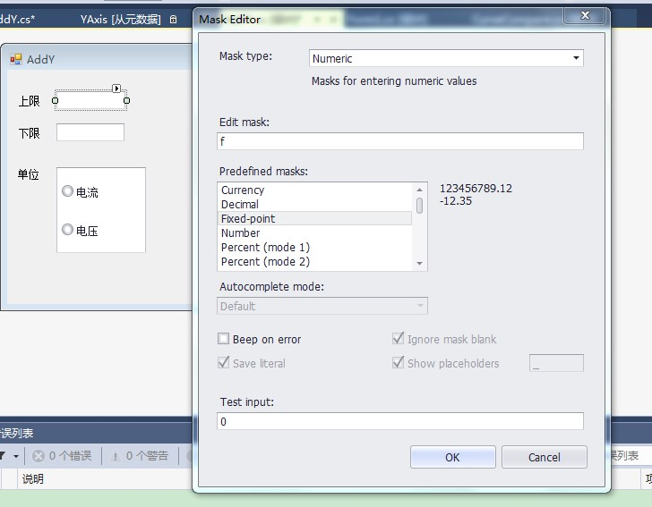

原文出处:本文由博客园博主霸道流氓提供。
原文连接:https://www.cnblogs.com/badaoliumangqizhi/p/11434162.html
原文连接:https://www.cnblogs.com/badaoliumangqizhi/p/11434162.html
场景
Winform控件-DevExpress18下载安装注册以及在VS中使用：
https://blog.csdn.net/BADAO_LIUMANG_QIZHI/article/details/100061243
参照以上将DevExpress安装并引进到工具箱。
这里使用的是VS2013所以安装的DevExpress是14版本。
效果
实现
在窗体上选中TextEdit，然后点击右上角三角号，选择ChangeMask
然后选择Mask type 这里是限制数字类型，所以选择Numeric。
然后在下面选择Predefined masks,左边选择后右边会有相应的预览，这里是可以输入正负的实数。
